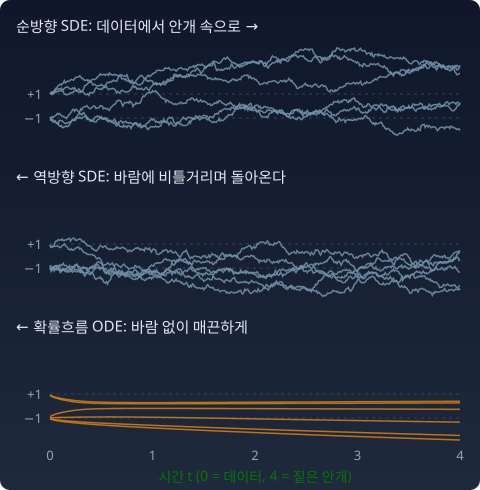

역방향 SDE: 안개를 거꾸로 걷는 데 필요한 재료
−1과 +1 두 점이 반반인 데이터에 짙은 안개 σ = 2를 섞고, 트위디 공식이 알려 주는 평균 위치로 한 번에 뛰어 보면 대부분 두 점 사이 빈 땅에 떨어진다. 안개가 짙을 때는 어느 볼에서 왔는지 모르니 평균이 한가운데로 가기 때문이다. 안개를 조금 걷고 그만큼만 걷고, 다시 조금 걷고 걷는 여러 걸음이 필요하다. 그 걸음은 안개를 짙게 하던 식을 시간을 거꾸로 돌린 것이어야 할 것이다. 그 식을 거꾸로 풀 수 있을까? 거꾸로 돌리려면 무엇이 더 있어야 할까?
역방향 SDE
1982년 브라이언 앤더슨(Brian Anderson)은 순방향 확산에 짝이 되는 역방향 식을 보였다. 시간 T(짙은 안개)에서 0(데이터)으로 거슬러 가며 다음을 풀면, 매 순간의 분포가 순방향의 pt와 정확히 같다.
dt가 음수라는 것을 놓치면 안 된다. −g²∇log pt dt 는 실제로는 +g² × (스코어) × |dt|, 곧 레이더 방향으로의 걸음이다. 걸음 폭 g²|dt|는 안개가 그만큼 걷히는 양이다. 그리고 순방향과 같은 크기 g의 바람이 분다.

바람 — 역방향 노이즈
참가자는 레이더 방향으로 걸으면서 바람에 비틀거린다. 이 비틀거림을 그냥 없애 버리면 어떻게 될까.
레이더를 따라 같은 보폭으로 걷되 바람만 끄면, 모든 참가자가 필요 이상으로 끌려간다. 가운데 가까이 있는 볼 몇 개에 몰리고, 각 볼 안에서도 한 점으로 뭉친다. 바로 아래 위젯의 세 번째 단추(「SDE에서 바람만 끔」)가 그 결과다. 위젯에서는 일곱 볼 가운데 한가운데 볼에 51%가, 점과 걸음을 더 많이 쓴 이 절의 파이썬에서는 64%가 몰린다(참 비중은 12%).
불러오는 중…
그런데 주최 측에는 다른 방법이 있다. 바람을 끄는 대신 보폭을 절반으로 줄이는 것이다.
확률흐름 ODE(probability flow ODE. ODE는 상미분방정식, ordinary differential equation)다(송(Yang Song) 외, 2021). 무작위가 전혀 없는 결정론적 식인데도, 매 순간의 분포가 역방향 SDE와 똑같이 pt다. 바람이 하던 "퍼뜨리는 일"을 보폭의 절반이 대신 해 주기 때문이다. 포커-플랑크 방정식(점들의 분포가 시간에 따라 어떻게 흐르는지 적은 식)으로 보면 구조가 보인다. 노이즈가 밀도를 바꾸는 몫 ½g²∇²pt는 ½g²∇·(pt ∇log pt)와 같은 식이다. 곧 노이즈로 퍼지는 일은, 점들을 속도 −½g²∇log pt로, 다시 말해 밀도가 높은 곳에서 낮은 곳으로 미는 흐름과 분포에 똑같은 변화를 준다. 그래서 바람을 끄고 그 흐름을 대신 걸음에 넣으면 분포는 그대로다. 레이더 방향의 보폭 g²에서 이 몫 ½g²을 빼고 나면 보폭의 절반이 남는다. DDIM(denoising diffusion implicit model, 잡음 제거 디퓨전 암묵적 모델, 송(Jiaming Song) 외 2020)이라는 빠른 샘플러가 이 ODE를 시간을 잘게 끊어 푸는(이산화) 한 방식이다.
그러면 다양성은 어디서 오는가. ODE에서는 출발점이 도착점을 완전히 정한다. 다양성은 출발점, 곧 짙은 안개 속에 흩어진 초기 노이즈에서 온다. 수천 명이 서로 다른 곳에서 출발하니 서로 다른 볼에, 올바른 비율로 도착한다. 바람은 다양성의 원천이 아니라, 같은 분포에 이르는 또 하나의 걸음 방식이다.
“다양성은 출발점의 흩어짐에서 온다. 비틀거림은 그 위에 얹을 수 있는 선택이다.”
파이썬
import numpy as np
mu = np.array([[-2.5, -1.5], [1.5, -2.0], [-1.0, 2.0], [2.5, 1.5],
[0.0, 0.0], [-2.0, 0.5], [1.0, -0.5]])
w = np.array([.18, .14, .16, .14, .12, .13, .13]); s0 = 0.4
def score(x, var): # 안개 낀 혼합의 스코어 (봉우리 분산 s0²+σ²)
d = mu[None] - x[:, None]
lg = np.log(w) - (d**2).sum(-1) / (2 * var)
g = np.exp(lg - lg.max(1, keepdims=True)); g /= g.sum(1, keepdims=True)
return (g[..., None] * d).sum(1) / var
def walk(rule, n=4000, N=500, smax=8.0, smin=0.01, seed=1):
r = np.random.default_rng(seed)
x = r.normal(size=(n, 2)) * np.sqrt(smax**2 + s0**2) # 출발: 짙은 안개 속 노이즈
sig = np.geomspace(smax, smin, N + 1)
for i in range(N):
d = sig[i]**2 - sig[i + 1]**2 # 이번 걸음에 걷히는 안개 (g² dt)
sc = score(x, s0**2 + sig[i]**2)
if rule == "SDE": x = x + d * sc + np.sqrt(d) * r.normal(size=x.shape)
if rule == "ODE": x = x + 0.5 * d * sc
if rule == "바람만 끔": x = x + d * sc
k = np.argmin(((x[:, None] - mu[None])**2).sum(-1), 1)
frac = np.bincount(k, minlength=7) / n
spread = np.sqrt(((x - mu[k])**2).sum(1).mean() / 2)
return frac, spread
print("참 비중 ", w)
for rule in ["SDE", "ODE", "바람만 끔"]:
f, sp = walk(rule)
print(f"{rule:8s}", f.round(2), f"퍼짐 {sp:.2f}", f"총변동 {0.5 * abs(f - w).sum():.3f}")
# 참 비중 [0.18 0.14 0.16 0.14 0.12 0.13 0.13]
# SDE [0.17 0.14 0.17 0.15 0.12 0.12 0.13] 퍼짐 0.39 총변동 0.017
# ODE [0.17 0.15 0.16 0.14 0.13 0.12 0.13] 퍼짐 0.39 총변동 0.019
# 바람만 끔 [0.01 0. 0.02 0. 0.64 0.13 0.2 ] 퍼짐 0.24 총변동 0.586
SDE와 ODE는 봉우리 비율도, 봉우리 안의 퍼짐(참값 0.4)도 맞춘다. 바람만 끈 걸음은 둘 다 틀린다. 총변동은 두 비율 표의 차이 절댓값을 더해 반으로 나눈 값이고, 0이면 두 표가 똑같다.
수확
“역방향 SDE에 필요한 새 재료는 스코어 하나다. 바람을 끄고 보폭을 절반으로 줄이면 결정론적인 확률흐름 ODE가 되고, 그래도 분포는 같다. 다양성은 초기 노이즈에서 온다.”
문제 9. 바람 없는 걸음은 무너지는가
데이터 N(0, 1)에 표류 없이 노이즈를 쌓아 pt = N(0, 1 + t)가 되게 했다(f = 0, g² = 1). 확률흐름 ODE를 t = 3에서 0까지 거꾸로 풀면, N(0, 4)에서 뽑은 출발점은 어떤 분포로 가는가?
함께 풀기

f = 0, g² = 1이고 데이터가 N(0, 1)이니까 스코어는 −x예요. dx/dt = −½ × (−x) = x/2라서, t = 3에서 0으로 오면 x(0) = x(3) × e−3/2이에요. 표준편차가 2 × 0.223 = 0.446, 분산 0.199예요. 데이터보다 훨씬 좁아요. 역시 바람이 없으면 쪼그라드나 봐요.

그 스코어는 몇 시의 지형이에요?

아… 데이터 지형이요. 안개 낀 가우시안 문제에서 한 실수를 또 했어요. 시각 t의 지형은 N(0, 1 + t)라서 스코어가 −x/(1 + t)예요.
민준 학생, 그 스코어로 확률흐름 ODE를 써 봐요.

f = 0, g² = 1이니까 dx/dt = −½ ∇log pt(x) = x / (2(1 + t))예요. 풀면 x(t) ∝ √(1 + t)네요. t = 3에서 0으로 오면 x(0) = x(3) × √(1/4) = x(3)/2예요.

N(0, 4)를 반으로 줄이면 N(0, 1)이에요. 무너지지 않아요. 노이즈 없이도 정확히 데이터 분포로 가요.
랑주뱅에서 노이즈를 끈 것과 뭐가 달라요?
랑주뱅은 지형이 하나로 고정돼 있어서 노이즈를 끄면 모두 꼭대기로 가요. 확률흐름 ODE는 지형이 매 순간 바뀌고, 보폭도 절반이에요. 출발점이 N(0, 4)로 흩어져 있으니까 그 흩어짐이 그대로 줄어들 뿐 사라지지 않아요.
발표 순서 정할 때 제비뽑기를 한 번 하고 나면 그 뒤는 정해진 규칙대로만 가도 되잖아요. 무작위는 처음 한 번이면 충분한 거예요.
좋은 비유예요. "노이즈를 끄면 무너진다"는 고정된 지형 위의 랑주뱅에 대한 말이에요. 디퓨전의 역방향에는 노이즈 없는 길이 따로 있어요.
문제 10. 거꾸로 도는 OU (킬러)
표류가 있는 순방향 과정 가운데 가장 단순한 오른슈타인–울렌벡(OU, Ornstein–Uhlenbeck) 과정, 곧 원점 쪽으로 끌리면서 흔들리는 과정 dx = −x dt + √2 dW를 쓴다. 데이터는 x₀ ~ N(3, 0.5²)이다. (가) pt의 평균과 분산을 구하라. t = 5에서 pt는 무엇에 가까운가? (나) 역방향 SDE를 쓰고, 거꾸로 센 시간 τ(그리스 문자 타우) = T − t로 바꿔 시뮬레이션할 식을 적어라. (다) x5 ~ N(0, 1)에서 출발해 거꾸로 풀어, 데이터 분포가 복원되는지 확인하라.
함께 풀기
(가)는 선형이라 쉬워요. 평균은 3e−t, 분산은 0.25e−2t + (1 − e−2t)예요. t = 5면 평균 0.020, 분산 0.99997이라 거의 N(0, 1)이에요.
좋아요. (나)는요?
역방향은 표류를 뒤집으면 돼요. 순방향이 −x니까 τ로 바꾸면 dx = x dτ + √2 dW예요.
나는 앤더슨 식대로 썼어. dx = [f − g²∇log pt] dt + g dW̄ 에 f = −x, g² = 2를 넣으면 dx = [−x − 2∇log pt] dt + √2 dW̄. 이걸 그대로 dt = +0.005로 돌렸어.
둘 다 (다)를 돌려 봤어요?
제 식은 끝에서 평균 0.15, 표준편차 206이 나왔어요. 데이터는 3 ± 0.5인데요.

제 건 평균 −115, 표준편차 800이에요. 더 심해요.
서연 학생 식부터 봐요. 표류만 뒤집으면 순방향 식을 그대로 시간 반대로 돌린 거예요. 206이라는 숫자에서 뭐가 보여요?
dx = x dτ면 x가 eτ배로 커져요. e⁵이 148이고, 노이즈까지 불어나니까 200대가 나오는 게 맞아요. 제 식은 흩어지게만 하고 모으는 힘이 없어요.

순방향에서 노이즈는 분포를 퍼뜨리는데, 표류를 뒤집어도 노이즈는 여전히 퍼뜨려요. 그걸 되돌리려면 퍼진 것을 도로 모으는 항이 따로 있어야 해요. 그게 −g²∇log pt예요. 노이즈의 부호는 못 뒤집으니까 스코어가 그 대가를 치르는 거네요.
그래요. 이제 민준 학생 식은 항은 다 있어요. 무엇이 틀렸을까요?
앤더슨 식에서 dt는… 시간을 거슬러 가니까 음수예요. 저는 양수로 넣었으니까 표류 전체의 부호가 뒤집혔어요. 스코어 항이 모으는 대신 밀어냈고요. 그래서 서연이보다 더 크게 터졌어요.
τ = T − t로 바꾸면 dt = −dτ니까 dx = [x + 2∇log pT−τ(x)] dτ + √2 dW예요. 스코어는 가우시안이라 −(x − 3e−t)/vt(시각 t의 분산)로, 식 하나로 바로 적히는 꼴(닫힌꼴)이고요.
다시 돌렸어요. 평균 2.996, 표준편차 0.505예요. 3과 0.5가 돌아왔어요!
확인해 보면 τ 쪽 표류 x + 2∇log p에서, 앞의 x는 순방향 표류를 뒤집은 것이고 뒤의 2∇log p는 노이즈를 되감는 것이야. 둘 중 하나만 있으면 안 돼.
보고서 수정 이력을 거꾸로 되돌릴 때랑 같네요. 지운 문장은 되살릴 수 있는데, 누가 커피 쏟아서 번진 부분은 “원래 뭐였을지” 추측하는 도구가 따로 있어야 하잖아요. 스코어가 그 추측 도구고요.

이 문제에 이 장이 다 들어 있어요. 역방향에 필요한 새 재료는 스코어 하나라는 것, 그 스코어가 노이즈의 퍼뜨림을 되감는다는 것, 그리고 시간을 거슬러 갈 때 부호를 지키는 것. 신경망은 여기서 닫힌꼴로 쓴 스코어를 대신 배울 뿐이에요.
편미분방정식 수업에서 열방정식은 앞으로는 잘 풀리는데 시간을 거꾸로 풀면 불량조건 문제가 된다고 배웠어요. 번진 것을 되돌리는 건 식만 뒤집어서는 안 되는 일이라서, 스코어라는 추가 정보가 붙어야 하는 거네요.